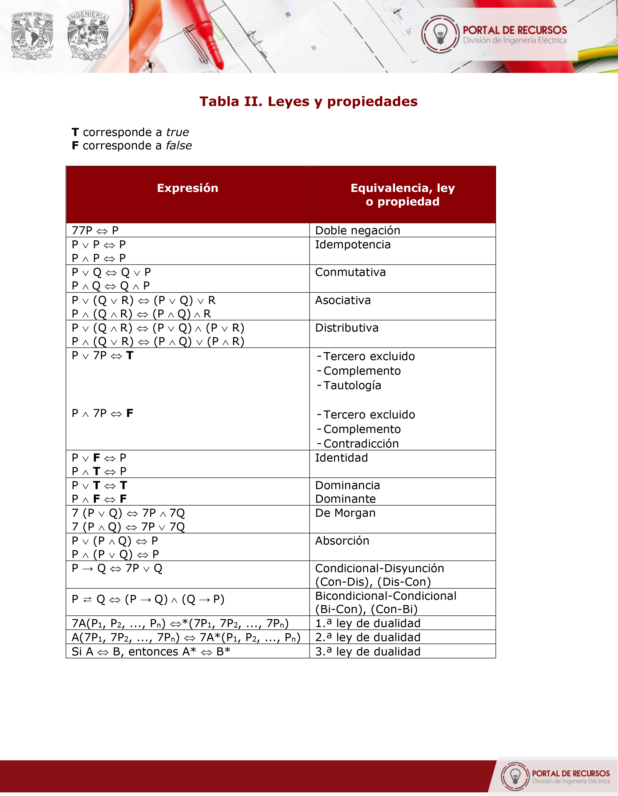
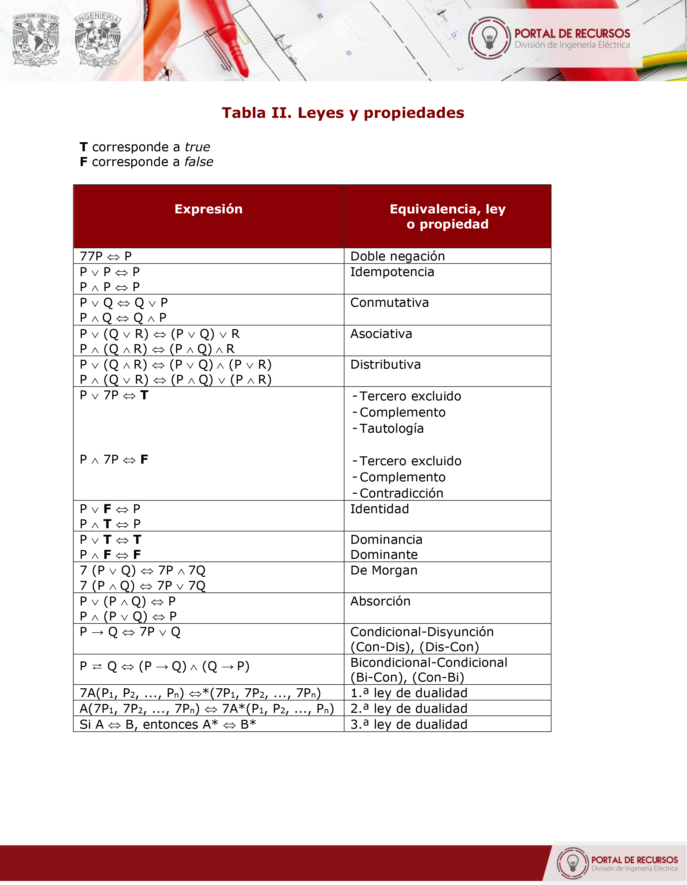
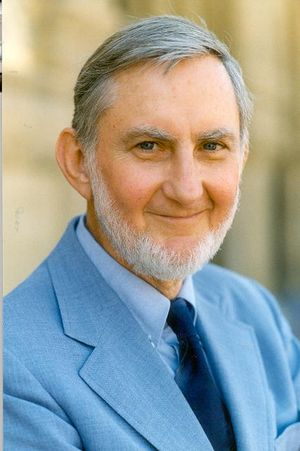
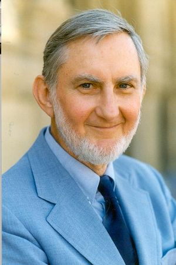

DEL ÁLGEBRA DE BOOLE:
• Diseño de circuitos lógicos (digitales: procesadores, memorias y dispositivos lógicos programables).
• Programación y algoritmos (estructuras de control condicional).
• Diseño de hardware.
NOS PERMITE:
• Debido a sus leyes, simplificar expresiones booleanas complejas, facilitando su comprensión y análisis. (Como lo hemos visto en los distintos métodos de minimización, y ahora con Quine-McCluskey).
• Optimizar circuitos digitales. (Se reducen el número de compuertas lógicas, mejorando su eficacia.)
Y proporciona un marco matemático adecuado para el estudio de la lógica y el razonamiento lógico; asunto
vital
para la computación moderna.
Y proporciona un marco matemático adecuado para el estudio de la lógica y el razonamiento lógico; asunto vital para la computación moderna.
Leyes
• Ley Conmutativa
Para la operación disyuntiva (OR) nos dice que el orden que ocupen las variables es indiferente. Lo representamos como: ∨
• Ley Asociativa
Para la operación conjuntiva (AND) el orden que ocupen las variables es indiferente, Lo representamos como: ∧
• Ley Distributiva
Para la operación disyuntiva (OR), en su resultado al tener un caso en que intervienen más de dos variables, va a ser independiente del modo en que se agrupen las variables.
Métodos de minimización
Ahora estamos teniendo un enfoque centrado a la búsqueda de representaciones algebraicas de lógica
para
representar desde circuitos hasta estructuras condicionales que por ende nos deja en un entorno de
lógica con razón de dos respuestas en las que encontramos a verdadero (1) y falso (0). Por lo que
encontraremos sistemas algebraicos en los que tendremos expresiones extensas y que complicarían la
comprensión de sí mismas para uno.
Por lo tanto, nos quedamos en la necesidad de recurrir a métodos que logren reducir las expresiones
en álgebra de Boole, que ahora; por comodidad, vamos a llamar funciones booleanas.
Para nuestro curso hemos visto distintas formas de reducir una función booleana, siendo estas las más
destacadas de las que se encuentran en el entorno computacional, en el área de lógica se refiere,
las
cuales
serían reducciones por:
Ahora estamos teniendo un enfoque centrado a la búsqueda de representaciones algebraicas de lógica para representar desde circuitos hasta estructuras condicionales que por ende nos deja en un entorno de lógica con razón de dos respuestas en las que encontramos a verdadero (1) y falso (0). Por lo que encontraremos sistemas algebraicos en los que tendremos expresiones extensas y que complicarían la comprensión de sí mismas para uno. Por lo tanto, nos quedamos en la necesidad de recurrir a métodos que logren reducir las expresiones en álgebra de Boole, que ahora; por comodidad, vamos a llamar funciones booleanas.
Para nuestro curso hemos visto distintas formas de reducir una función booleana, siendo estas las más destacadas de las que se encuentran en el entorno computacional, en el área de lógica se refiere, las cuales serían reducciones por:
• Método algebraico.
• Mapas de Karnaugh.
• Método de Quine-McCluskey
Método Algebraico
Para este método es a primera instancia, fácil de interpretar por su semejanza con los sistemas
algebraicos a
los que estamos acostumbrados. Sin embargo, aquí iremos aplicando los postulados (o propiedades)
del álgebra
de Boole.
Bueno, las propiedades que se estuvieron manejando durante el curso para la aplicación de este
método se
encuentran en la tabla VI que adjuntamos a continuación, en donde estamos manejando las
representaciones de la
conjunción, disyunción y negación en su forma ( · , + y ‘, respectivamente).

Tabla de propiedades del método algebraico basado en las tablas de lógica proposicional proporcionadas por el profesor
Ing. Orlando Zaldívar Zamorategui.
Para este método es a primera instancia, fácil de interpretar por su semejanza con los sistemas algebraicos a los que estamos acostumbrados. Sin embargo, aquí iremos aplicando los postulados (o propiedades) del álgebra de Boole.
Bueno, las propiedades que se estuvieron manejando durante el curso para la aplicación de este método se encuentran en la tabla VI que adjuntamos a continuación, en donde estamos manejando las representaciones de la conjunción, disyunción y negación en su forma ( · , + y ‘, respectivamente).
Tabla de propiedades del método algebraico basado en las tablas de lógica proposicional proporcionadas por el profesor Ing. Orlando Zaldívar Zamorategui.
Mapas de Karnaugh
Este método surge de tratar de agrupar a los términos de interés sin aplicar de forma directa el
desarrollo
algebraico que ofrece el método anterior. Y esto se constituye de desarrollar de forma gráfica
la tabla de
verdad de una función lógica.
Mapa de Karnaugh trabajado en clase del profesor Ing. Orlando Zaldívar Zamorategui.
Como podemos ver, se pueden tratar funciones de dos hasta cinco variables, para este método
tabular cuyos
términos canónicos adyacentes pueden ser agrupados para hacer de forma más sencilla la
agrupación de los
elementos.
Su algoritmo, en pocas palabras, consiste en:
1. Se escribe un 1 en los cuadros que tiene un número de los que forman la
sumatoria de la función.
2. Se forman los grupos de minitérminos que se consideran vecinos (tienen un
lado en común).
3. Se identifican a las variables para los conjuntos hechos por los grupos que
hicimos de los minitérminos, estos serán los conjuntos.
4. Hacemos la sumatoria de los productos *Habrá que comprobar el resultado
con el método gráfico de formar líneas dictadas por las variables que forman a
los productos de los grupos*.
Ejercicio aplicando Mapas de Karnaugh trabajado en clase del profesor Ing. Orlando Zaldívar Zamorategui.
Método de minimización de Quine-McCluskey
Fue desarrollado por Willard Van Orman Quine y Edward J. McCluskey. El Algoritmo Quine–McCluskey es un método tabular que se utiliza para
minimizar funciones booleanas siguiendo un algoritmo, similar a la utilización del mapa de Karnaugh. La ventaja que tiene sobre los mapas
de Karnaugh es que podemos utilizar cuantas variables queramos, puesto que, el método evita que hagamos demasiados mapas de Karnaugh. Cabe
mencionar que este método resulta tener mayor eficacia en cuanto a su implementación en el lenguaje computacional.
El metodo de Quine-McCluskey permite un manejo amplio en las funciones booleanas, pudiendo manejar casos con:
Willard Van Orman Quine (1908-2000)

Edward J. McCluskey (1929-2016)
A considerar que la función booleana como:
Se nos puede presentar una función booleana de:
- 2 variables: f(a,b)
- 3 variables: f(a,b,c)
- 4 variables: f(a,b,c,d)
O hasta 7 variables: f(a,b,c,d,e,f,g)
Y eso nos va a indicar que las representaciones binarias de los minitérminos podrían llegar a
representarse dependiendo de la cantidad de variables presentes en la función boolena:
Y así sucesivamente.
Entonces, para su desarrollo se realiza por medio de la elaboración de tablas en las que se
van a ir agregando datos específicos, así que, para minimizar una función booleana se podría
resumir en:
PASO 1.
Elaborar una tabla 1 en donde vamos a ir almacenando a los minitérminos de la función en la
primera columna, su representación binaria en la tercera columna, y por último la segunda
columna la cantidad de 1’s en su representación binaria (0, 1, 2, 3, …, n).
*NOTA: la cuarta columna sirve de apoyo para agregar comentarios al momento de ejercer algún
movimiento importante en el desarrollo y es necesario volver a checar qué se hizo. Aunque,
nosotros lo hemos trabajado como una columna para escribir una marca de tipo *, que vamos a
explicar en un momento.
PASO 2.
Generamos una tabla 2, en esta vamos a reordenar a los minitérminos y su representación de
acuerdo con la cantidad de 1’s que tienen en su representación.
Y vamos marcando con un * en la tabla 1, a los minitérminos que ya hemos agregado a la tabla 2.
PASO 3.
Generamos una tabla 3, que nos servirá para empezar a realizar combinaciones. Efecto que puede
ser presentado una vez que se pase por los siguientes puntos:
I. Buscamos en la representación binaria de los minitérminos,
los que difieren en solo una variable (la que sea) para
poder realizar una combinación con apoyo en la tabla 2.
II. Empezamos con el primer caso en la cantidad de 1’s con
la siguiente cantidad. En este caso los que tienen cero
1’s con los que tiene un solo 1.
III. Al combinar a los minitérminos, si tenemos:
0 y 0 escribimos 0
1 y 1 escribimos 1
0 y 1 escribimos -
Y vamos marcando en la tabla 2 a los minitérminos que vamos combinando.
NOTA: Puede haber casos en los que nos quede un minitérmino que no se pueda combinar con los
otros que están involucrados en la función booleana. Estos ya son considerados implicantes primos
y van directo a la tabla del mismo nombre.
PASO 4.
Generamos una tabla 4, para realizar una segunda combinación; sin embargo, serán
combinaciones de combinaciones, apoyándonos en la tabla anterior (la tabla 3).
Para esta segunda vuelta de combinaciones, nos seguimos basando en las reglas de combinación que
hemos descrito anteriormente.
Para la combinación de combinaciones vamos a considerar que sólo una variable difiera entre las
representaciones binarias de las combinaciones. Por ejemplo: (0,1) combinado con (2,3) cuyas representaciones
son 000- y 001- respectivamente, y la única variable que difiere es ‘c’ por lo tanto, se pueden combinar estas
combinaciones.
Y así, la primera combinación de combinaciones generada sería (0,1,2,3), cuya representación en la columna abcd
queda como: 00--.
Marcamos un * en la última columna indicando qué combinaciones han logrado pasar por una segunda combinación.
En caso de tener otras combinaciones que al combinarse generen una combinación igual a una ya obtenida, se van
a marcar también. En este caso, con las combinaciones (0,2) y (1,3) podemos marcarlas también debido a que al
combinarlas obtenemos (0,1,2,3), con una representación exactamente igual: 00-- como con la combinación anterior.
PASO 5.
Generamos la tabla 5 (la tabla de los implicantes primos), y vamos almacenando a los
minitérminos y combinaciones que hemos considerado como implicantes primos, además de sus
representaciones binarias en su correspondiente columna y marcar con una X en las celdas que
denotan un minitérmino de la función.
Y consideramos para la escritura del producto:
Si en la representación binaria (abcd) tenemos para el producto:
- no hay variable representativa
0 la variable está negada
1 la variable no está negada
TABLA DE LOS IMPLICANTES PRIMOS:
PASO 6.
Y escribimos el resultado como la suma de productos (aunque esta no es la única forma).

Este método surge de tratar de agrupar a los términos de interés sin aplicar de forma directa el desarrollo algebraico que ofrece el método anterior. Y esto se constituye de desarrollar de forma gráfica la tabla de verdad de una función lógica.
Como podemos ver, se pueden tratar funciones de dos hasta cinco variables, para este método tabular cuyos términos canónicos adyacentes pueden ser agrupados para hacer de forma más sencilla la agrupación de los elementos.
Su algoritmo, en pocas palabras, consiste en:
1. Se escribe un 1 en los cuadros que tiene un número de los que forman la sumatoria de la función.
2. Se forman los grupos de minitérminos que se consideran vecinos (tienen un lado en común).
3. Se identifican a las variables para los conjuntos hechos por los grupos que hicimos de los minitérminos, estos serán los conjuntos.
4. Hacemos la sumatoria de los productos *Habrá que comprobar el resultado con el método gráfico de formar líneas dictadas por las variables que forman a los productos de los grupos*.
Método de minimización de Quine-McCluskey
Fue desarrollado por Willard Van Orman Quine y Edward J. McCluskey. El Algoritmo Quine–McCluskey es un método tabular que se utiliza para
minimizar funciones booleanas siguiendo un algoritmo, similar a la utilización del mapa de Karnaugh. La ventaja que tiene sobre los mapas
de Karnaugh es que podemos utilizar cuantas variables queramos, puesto que, el método evita que hagamos demasiados mapas de Karnaugh. Cabe
mencionar que este método resulta tener mayor eficacia en cuanto a su implementación en el lenguaje computacional.
El metodo de Quine-McCluskey permite un manejo amplio en las funciones booleanas, pudiendo manejar casos con:
Willard Van Orman Quine (1908-2000)

Edward J. McCluskey (1929-2016)
A considerar que la función booleana como:
Se nos puede presentar una función booleana de:
- 2 variables: f(a,b)
- 3 variables: f(a,b,c)
- 4 variables: f(a,b,c,d)
O hasta 7 variables: f(a,b,c,d,e,f,g)
Y eso nos va a indicar que las representaciones binarias de los minitérminos podrían llegar a
representarse dependiendo de la cantidad de variables presentes en la función boolena:
Y así sucesivamente.
Entonces, para su desarrollo se realiza por medio de la elaboración de tablas en las que se
van a ir agregando datos específicos, así que, para minimizar una función booleana se podría
resumir en:
PASO 1.
Elaborar una tabla 1 en donde vamos a ir almacenando a los minitérminos de la función en la
primera columna, su representación binaria en la tercera columna, y por último la segunda
columna la cantidad de 1’s en su representación binaria (0, 1, 2, 3, …, n).
*NOTA: la cuarta columna sirve de apoyo para agregar comentarios al momento de ejercer algún
movimiento importante en el desarrollo y es necesario volver a checar qué se hizo. Aunque,
nosotros lo hemos trabajado como una columna para escribir una marca de tipo *, que vamos a
explicar en un momento.
PASO 2.
Generamos una tabla 2, en esta vamos a reordenar a los minitérminos y su representación de
acuerdo con la cantidad de 1’s que tienen en su representación.
Y vamos marcando con un * en la tabla 1, a los minitérminos que ya hemos agregado a la tabla 2.
PASO 3.
Generamos una tabla 3, que nos servirá para empezar a realizar combinaciones. Efecto que puede
ser presentado una vez que se pase por los siguientes puntos:
I. Buscamos en la representación binaria de los minitérminos,
los que difieren en solo una variable (la que sea) para
poder realizar una combinación con apoyo en la tabla 2.
II. Empezamos con el primer caso en la cantidad de 1’s con
la siguiente cantidad. En este caso los que tienen cero
1’s con los que tiene un solo 1.
III. Al combinar a los minitérminos, si tenemos:
0 y 0 escribimos 0
1 y 1 escribimos 1
0 y 1 escribimos -
Y vamos marcando en la tabla 2 a los minitérminos que vamos combinando.
NOTA: Puede haber casos en los que nos quede un minitérmino que no se pueda combinar con los
otros que están involucrados en la función booleana. Estos ya son considerados implicantes primos
y van directo a la tabla del mismo nombre.
PASO 4.
Generamos una tabla 4, para realizar una segunda combinación; sin embargo, serán
combinaciones de combinaciones, apoyándonos en la tabla anterior (la tabla 3).
Para esta segunda vuelta de combinaciones, nos seguimos basando en las reglas de combinación que
hemos descrito anteriormente.
Para la combinación de combinaciones vamos a considerar que sólo una variable difiera entre las
representaciones binarias de las combinaciones. Por ejemplo: (0,1) combinado con (2,3) cuyas representaciones
son 000- y 001- respectivamente, y la única variable que difiere es ‘c’ por lo tanto, se pueden combinar estas
combinaciones.
Y así, la primera combinación de combinaciones generada sería (0,1,2,3), cuya representación en la columna abcd
queda como: 00--.
Marcamos un * en la última columna indicando qué combinaciones han logrado pasar por una segunda combinación.
En caso de tener otras combinaciones que al combinarse generen una combinación igual a una ya obtenida, se van
a marcar también. En este caso, con las combinaciones (0,2) y (1,3) podemos marcarlas también debido a que al
combinarlas obtenemos (0,1,2,3), con una representación exactamente igual: 00-- como con la combinación anterior.
PASO 5.
Generamos la tabla 5 (la tabla de los implicantes primos), y vamos almacenando a los
minitérminos y combinaciones que hemos considerado como implicantes primos, además de sus
representaciones binarias en su correspondiente columna y marcar con una X en las celdas que
denotan un minitérmino de la función.
Y consideramos para la escritura del producto:
Si en la representación binaria (abcd) tenemos para el producto:
- no hay variable representativa
0 la variable está negada
1 la variable no está negada
TABLA DE LOS IMPLICANTES PRIMOS:
PASO 6.
Y escribimos el resultado como la suma de productos (aunque esta no es la única forma).
Fue desarrollado por Willard Van Orman Quine y Edward J. McCluskey. El Algoritmo Quine–McCluskey es un método tabular que se utiliza para minimizar funciones booleanas siguiendo un algoritmo, similar a la utilización del mapa de Karnaugh. La ventaja que tiene sobre los mapas de Karnaugh es que podemos utilizar cuantas variables queramos, puesto que, el método evita que hagamos demasiados mapas de Karnaugh. Cabe mencionar que este método resulta tener mayor eficacia en cuanto a su implementación en el lenguaje computacional. El metodo de Quine-McCluskey permite un manejo amplio en las funciones booleanas, pudiendo manejar casos con:
Willard Van Orman Quine (1908-2000)
Edward J. McCluskey (1929-2016)
A considerar que la función booleana como:
Se nos puede presentar una función booleana de:
- 2 variables: f(a,b)
- 3 variables: f(a,b,c)
- 4 variables: f(a,b,c,d)
O hasta 7 variables: f(a,b,c,d,e,f,g)
Y eso nos va a indicar que las representaciones binarias de los minitérminos podrían llegar a representarse dependiendo de la cantidad de variables presentes en la función boolena:
Y así sucesivamente.Entonces, para su desarrollo se realiza por medio de la elaboración de tablas en las que se van a ir agregando datos específicos, así que, para minimizar una función booleana se podría resumir en:
PASO 1.
Elaborar una tabla 1 en donde vamos a ir almacenando a los minitérminos de la función en la primera columna, su representación binaria en la tercera columna, y por último la segunda columna la cantidad de 1’s en su representación binaria (0, 1, 2, 3, …, n).
*NOTA: la cuarta columna sirve de apoyo para agregar comentarios al momento de ejercer algún movimiento importante en el desarrollo y es necesario volver a checar qué se hizo. Aunque, nosotros lo hemos trabajado como una columna para escribir una marca de tipo *, que vamos a explicar en un momento.
PASO 2.
Generamos una tabla 2, en esta vamos a reordenar a los minitérminos y su representación de acuerdo con la cantidad de 1’s que tienen en su representación.
Y vamos marcando con un * en la tabla 1, a los minitérminos que ya hemos agregado a la tabla 2.
PASO 3.
Generamos una tabla 3, que nos servirá para empezar a realizar combinaciones. Efecto que puede ser presentado una vez que se pase por los siguientes puntos:
I. Buscamos en la representación binaria de los minitérminos,
los que difieren en solo una variable (la que sea) para
poder realizar una combinación con apoyo en la tabla 2.
II. Empezamos con el primer caso en la cantidad de 1’s con
la siguiente cantidad. En este caso los que tienen cero
1’s con los que tiene un solo 1.
III. Al combinar a los minitérminos, si tenemos:
0 y 0 escribimos 0
1 y 1 escribimos 1
0 y 1 escribimos -
Y vamos marcando en la tabla 2 a los minitérminos que vamos combinando.
NOTA: Puede haber casos en los que nos quede un minitérmino que no se pueda combinar con los otros que están involucrados en la función booleana. Estos ya son considerados implicantes primos y van directo a la tabla del mismo nombre.
PASO 4.
Generamos una tabla 4, para realizar una segunda combinación; sin embargo, serán combinaciones de combinaciones, apoyándonos en la tabla anterior (la tabla 3).
Para esta segunda vuelta de combinaciones, nos seguimos basando en las reglas de combinación que hemos descrito anteriormente.
Para la combinación de combinaciones vamos a considerar que sólo una variable difiera entre las representaciones binarias de las combinaciones. Por ejemplo: (0,1) combinado con (2,3) cuyas representaciones son 000- y 001- respectivamente, y la única variable que difiere es ‘c’ por lo tanto, se pueden combinar estas combinaciones.Y así, la primera combinación de combinaciones generada sería (0,1,2,3), cuya representación en la columna abcd queda como: 00--.
Marcamos un * en la última columna indicando qué combinaciones han logrado pasar por una segunda combinación.
En caso de tener otras combinaciones que al combinarse generen una combinación igual a una ya obtenida, se van a marcar también. En este caso, con las combinaciones (0,2) y (1,3) podemos marcarlas también debido a que al combinarlas obtenemos (0,1,2,3), con una representación exactamente igual: 00-- como con la combinación anterior.
PASO 5.
Generamos la tabla 5 (la tabla de los implicantes primos), y vamos almacenando a los minitérminos y combinaciones que hemos considerado como implicantes primos, además de sus representaciones binarias en su correspondiente columna y marcar con una X en las celdas que denotan un minitérmino de la función.
Y consideramos para la escritura del producto:
Si en la representación binaria (abcd) tenemos para el producto:
- no hay variable representativa 0 la variable está negada 1 la variable no está negada
TABLA DE LOS IMPLICANTES PRIMOS:
PASO 6.
Y escribimos el resultado como la suma de productos (aunque esta no es la única forma).